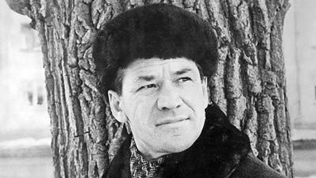

Во все годы существования Башкирии были поэты, которые вносили свой вклад в культурное развитие края. Давайте рассмотрим наиболее известных из них.
Акмулла Мифтахетдин. Родился 14 (27) декабря 1831 года в деревне Туксанба́ево Белебеевского уезда (в настоящее время Миякинского района Республики Башкортостан). Отец — Камалетдин Искужин (1805 г.р.), указной имам, мать — Бибиуммугульсум Салимьянова (1809 г.р.)
Ещё мальчиком, Акмулла получил образование в Туксанбаево (в родной деревне), а позже начал учёбу в медресе соседних деревень Менеузтамак и Анясово. В деревне Стерлибашево был шакирдом у знаменитого поэта-суфия Шамсетдина Заки. Не найдя язык с отцом, Мифтахетдин в 1859 году уходит из дома и отправляется на юг Башкирии: Стерлибашево, Оренбург, Троицк и казахские степи. Акмулла впоследствии обучал детей, знал ремёсла (плотничество), позже получил известность как поэт-импровизатор. Он писал стихи в другом стиле, что вызвало интерес народа к его строкам. Таким образом, Акмулла стал одним из известнейших поэтов края в XIX веке!
В 1866 году казахский бай Батуч Исянгильдин донёс на поэта, что тот отклонился от службы в армии. В итоге, Акмулла был арестован, и с 1867 по 1871 года провёл в Троицкой тюрьме. За четыре года заключения башкирский поэт написал множество стихотворений, вот одно из них:
Моё место — в зиндане (перевод на русский)
Привет вам посылает странник Акмулла,
Писавший правду для народа ваш мулла,
Привет степям просторным от меня,
Осужденного по навету врагов.
Весь пожелтел я, глядючи в окно,
Душа моя терпенье потеряла.
Исангильды, Батуча был учителем,
В ответ неблагодарность заслужил.
В печальных думах похудел я, высох,
Слова не достигают никого…
В ночь на 14 (27) декабря 1895 года по дороге из Троицкa в Златоуст недалеко от Миасского завода вблизи железнодорожной станции Сыростан он был убит. Похоронен на мусульманском кладбище Миасса.
Мажит Гафури. Мажит Гафури родился 20 июля (1 августа) 1880 года в деревне Зилим-Караново Стерлитамакского уезда Уфимской губернии в семье учителя. Начальное образование получил от отца, позже продолжил учёбу в школе.
Даже рано потеряв родителей, Мажит продолжает учиться: с 1898 по 1904 год Мажит Гафури обучается в медресе Троицка, позже уезжает на учёбу в Казань. Через два года (1906) возвращается в Уфу и начинает учиться в медресе «Галия» (одно из самых известных в столице), окончил которую в 1909.
Первое стихотворение Гафури «Шакирдам ишана» было написано ещё в 1902 году, а уже в 1904 выходит первая его книга «Сибирская железная дорога, или положение нации». В годы гражданской войны Мажит Гафури принял сторону большевиков, его стихотворения посвящены героизму и отваге:
Красный флаг (перевод на русский)
Погляди вперед —
Красный флаг плывет.
С ним былую тьму
Победил народ.
С ним рабочий класс,
Правда только в нем!
Всей земле он стал
Путевым огнем.
Озаряй же мир,
Наш багряный флаг!
Мы несем тебя
В молодых руках!
В Уфе на улице Гоголя 28 находится Дом-музей Мажита Гафури. Гафури прожил в нем последние 11 лет. Поэт умер 28 октября 1934 года. Но даже несмотря на относительно короткую жизнь, память о башкирском поэте жива: например, в честь Мажита Гафури назван Башкирский государственный академический театр драмы.
Мустай Карим. Мустай Карим (настоящее имя которого Мустафа Сафич Каримов) родился 20 октября 1919 года в деревне Кляшево Чишминского района. Узнав в раннем детстве множество легенд, сказок и стихотворений, в 6-м классе Мустафа пишет свои первые стихи, которые были опубликованы в журнале «Юный строитель». В 19 лет юного поэта принимают в Союз писателей БАССР, немного позже начинает сотрудничество с журналом «Пионер». В 1941 году Мустай Карим, получив высшее образование, получает направление в Ермекеево, где собирается обучать детей. Но война помешала этим планам.
Наверное, роковым совпадением становится стихотворение «Комсомольский билет», написанное Мустаем в 18 лет:
Пробила насквозь комсомольский билет.
Прострелен билет, прострелена грудь.
Друзьям он успел, умирая, шепнуть:
– Недолго я, братцы, на свете прожил,
За Родину голову с честью сложил…
В 42-м Мустафу ранили на фронте, где он служил начальником связи: пуля пробила комсомольский билет и повредила легкое. Поэт перенес три операции, полгода лежал в госпитале. Как говорил через много лет писатель:«Вернулся с двумя книгами стихов, двумя ранениями, безмерно влюбленный в землю и людей и безнадежно больной туберкулезом легких».
Не русский я, но россиянин. Ныне
Я говорю, свободен и силён:
Я рос, как дуб зелёный на вершине,
Водою рек российских напоен.
С башкиром русский — спутники в дороге,
Застольники — коль брага на столе,
Соратники — по воинской тревоге,
Навеки сомогильники — в земле.
У народного поэта Башкирской АССР опубликованы около 100 сборников стихов и рассказов, более 10 драм. После переводов на разные языки народов мира творчество Мустая Карима обрело планетарный размах. По некоторым произведениям сделаны театральные постановки и сняты фильмы. Большим успехом у зрителей пользуется спектакль «Луна и листопад» по повести Мустая Карима «Помилование», также завоевала большую популярность постановка «В ночь лунного затмения».
Баязит Бикбай. Родился 10 января 1909 года, первое образование получил в своей родной деревне. Немного позже уезжает в Уфу на учёбу в техникуме, который оканчивает 1929 году.
В 30-е годы начинается активная творческая жизнь Бикбая: работает секретарём туймазинской газеты «Путь Ленина», заведует отделом «Башкортостан» в книжном издательстве, также является секретарем журнала «Октябрь» и заведующим литературной частью Башкирского театра драмы; кроме того, приглашается и в дальнейшем работает в Союзе писателей Башкирии.
В 1932 году увидел свет первый сборник стихов Бикаева «Текущие дни». За ним выходят книги «За лесом», «Светлая земля». В годы Великой Отечественной войны появились сборники «Я славлю землю», «Огненные строки». Конечно, больше знаем мы Бикбая как драматурга, так что познакомится с ним можно будет в статье о башкирском театре.
Желание
И уголек, покрытый пеплом,
Еще огонь таит внутри,
Но он умрет без встречи с ветром...
Гори ж, душа моя, гори!
Твори! Спеши! Не знай покоя.
Не вечен сердца перестук.
А жить на этом свете стоит,
Чтоб песни слово золотое,
Как птицу, выпустить из рук.
Чтобы оно, вспарив, однажды,
Служило людям бы века,
Как умирающим от жажды
Живые струи родника.
Умер Баязит Бикбай в 1968 году, прожив 59 лет. За активное участие и развития искусства края, поэт был удостоен орденом Трудового Красного Знамени и «Знак Почёта», а также посмертно награждён премией Салавата Юлаева.
Рами Гарипов. Родился 12 февраля 1932 года в деревне Аркаул Салаватского района. Семь лет проучился в своей родной деревенской школе, после окончания которой, учился в Уфимской средней школе № 9 (ныне-Башкирская републиканская гимназия №1 им. Р.Гарипова).
В 1950 году Рами становится студентом Литературного института имени Горького, оканчивает который через пять 5 лет. Рами Гарипов начинает активную творческую деятельность в таких журналах и газетах, как «Совет Башкортостаны», «Агидель», а также работает редактором художественной литературы. Первая книга стихов «Юрюзань» (1954) . Сборники стихов «Каменный цветок» (1958), «Песня жаворонка» (1964) он посвятил родному краю, природе, своим землякам. Кроме того, Гарипов работает над переводами поэзии Блока, Пушкина, Лермонтова, Есенина и многих друзей.
Черновик (перевод на русский А. Могучева)
Когда мой черновик стихов случайно
Вам в руки попадет, то все равно
Зачем искать вам в нем сокрытой тайны -
Вам не найти в нем жемчуга зерно.
Здесь мыслей карусель и страсти вьюга,
И шелковая лента слов и строк,
Гармония стиха - души подруга
И поиск неизведанных дорог.
Много в стихах башкирского поэта критики в адрес власти - не раз за неё Рами Гарипов преследовался Советами, по этой причине многие его стихотворения были напечатаны только с расспадом СССР. Умер Гарипов в 1977 году, оставив свой глубокий отпечаток в культуре республики, за что поэт был посмертно удостоен звания Народный поэт Башкортостана (1992). В его честь была названа улица в Уфе, в селе Аркауле, в Мелеузе, а в ноябре 1990 года учреждена премия имени Рами Гарипова.
Вывод. К сожалению, нельзя написать про всех поэтов республики, поэтому я попытался показать здесь наиболее значимых и известных творческих деятелей Башкортстана. Память о них будет вечной в сердцах всего башкирского народа, их имена по праву заняли своё должное место в истории за свою творсечкую деятельность и участие в жизни края.
 Акмулла Мифтахетдин. Родился 14 (27) декабря 1831 года в деревне Туксанба́ево Белебеевского уезда (в настоящее время Миякинского района Республики Башкортостан). Отец — Камалетдин Искужин (1805 г.р.), указной имам, мать — Бибиуммугульсум Салимьянова (1809 г.р.)
Акмулла Мифтахетдин. Родился 14 (27) декабря 1831 года в деревне Туксанба́ево Белебеевского уезда (в настоящее время Миякинского района Республики Башкортостан). Отец — Камалетдин Искужин (1805 г.р.), указной имам, мать — Бибиуммугульсум Салимьянова (1809 г.р.) Мажит Гафури. Мажит Гафури родился 20 июля (1 августа) 1880 года в деревне Зилим-Караново Стерлитамакского уезда Уфимской губернии в семье учителя. Начальное образование получил от отца, позже продолжил учёбу в школе.
Мажит Гафури. Мажит Гафури родился 20 июля (1 августа) 1880 года в деревне Зилим-Караново Стерлитамакского уезда Уфимской губернии в семье учителя. Начальное образование получил от отца, позже продолжил учёбу в школе. Мустай Карим. Мустай Карим (настоящее имя которого Мустафа Сафич Каримов) родился 20 октября 1919 года в деревне Кляшево Чишминского района. Узнав в раннем детстве множество легенд, сказок и стихотворений, в 6-м классе Мустафа пишет свои первые стихи, которые были опубликованы в журнале «Юный строитель». В 19 лет юного поэта принимают в Союз писателей БАССР, немного позже начинает сотрудничество с журналом «Пионер». В 1941 году Мустай Карим, получив высшее образование, получает направление в Ермекеево, где собирается обучать детей. Но война помешала этим планам.
Мустай Карим. Мустай Карим (настоящее имя которого Мустафа Сафич Каримов) родился 20 октября 1919 года в деревне Кляшево Чишминского района. Узнав в раннем детстве множество легенд, сказок и стихотворений, в 6-м классе Мустафа пишет свои первые стихи, которые были опубликованы в журнале «Юный строитель». В 19 лет юного поэта принимают в Союз писателей БАССР, немного позже начинает сотрудничество с журналом «Пионер». В 1941 году Мустай Карим, получив высшее образование, получает направление в Ермекеево, где собирается обучать детей. Но война помешала этим планам.